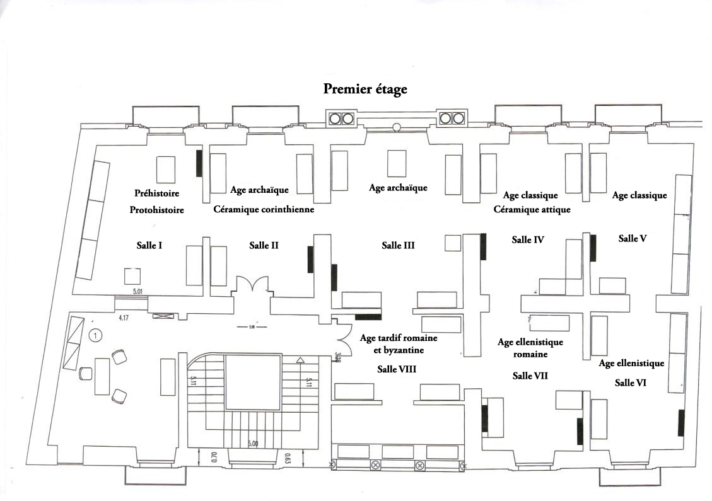

Plan du musée
Rez de chaussée
Le parcours de l’exposition se déroule sur deux étages. L’étage inférieur et le couloir d’accès du palais accueillent les
objets en pierre. Le long des murs nous trouvons quelques inscriptions, des stèles funéraires de grande importance pour
la connaissance de la topographie de l’antique cité, un cippe portant une inscription en langue grecque du IV°-III° siècle
av. J-C.
Premier étage

A l'étage supérieur : l'exposition des objets suit un critère essentiellement chronologique et, bien qu’il s’agisse
d’une collection, il a pour but de nous renseigner sur la longue et complexe stratification historique du site: des
premières fréquentations humaines jusqu'à la romanisation, en passant par la préhistoire et la protohistoire (salle I), l'âge
archaïque (salle II-III), l'âge classique (salle IV-V), l'âge hellénistique (salle VI) , l'âge hellénistique-romain (salle VII),
et l'âge tardif romaine et byzantin (salle VIII).